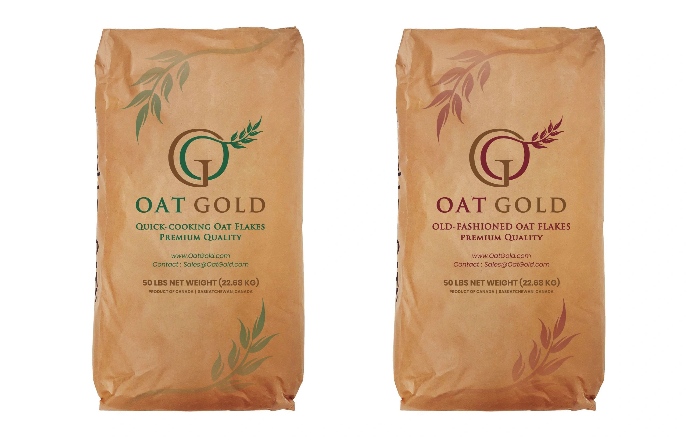

Rolled
Rolled Oats
Versatile flaked oats for cereals, bars, baking, and blends. Available in multiple flake thicknesses.
View specs →Naturally gluten-free · Grown & milled in-house
Wheat has never been grown on our land — our oats are naturally gluten-free from the seed up. We farm, mill at our boutique flaking facility, and ship to food manufacturers, distributors, and food aid organizations worldwide.

Our oat portfolio
From whole groats to gluten-free and Purity Protocol oats, we supply clean, consistent ingredients sized to your spec and your volume.
Versatile flaked oats for cereals, bars, baking, and blends. Available in multiple flake thicknesses.
View specs →Coarse, hearty groats cut for texture-forward products and premium hot cereals.
View specs →Whole, minimally processed oat kernels — the foundation for milling, sprouting, and value-added lines.
View specs →Oats produced under controlled handling for gluten-free claims and sensitive formulations.
View specs →Oats grown and handled under the Purity Protocol for the highest assurance of gluten avoidance.
Learn more →Truckload and container volumes, plus private-label and custom-spec oat ingredients for manufacturers.
View specs →Why Oat Gold™
Our farming operation is passionate and dedicated to quality on all levels — and it starts with the land itself.
From our farm to your facility
Wheat has never been grown on our land. Our oats are naturally gluten-free from seed to harvest — the foundation everything else is built on.
Our boutique flaking facility produces Quick & Old Fashioned Rolled, Steel Cut oats, and Oat Groats — custom-processed to your specification.
Bulk tote bags, 50 lb multi-wall paper bags, or custom retail pillow pouches. We ship anywhere in the world via 20 & 40 ft ocean containers, and domestically by truck.
We value those that value us. Every customer is treated as our only customer — we understand your specific needs and over-deliver on every promise.
Tell us your oat type, volume, and destination and we'll get you a quote. New buyers and recurring supply programs both welcome.
Request a Quote